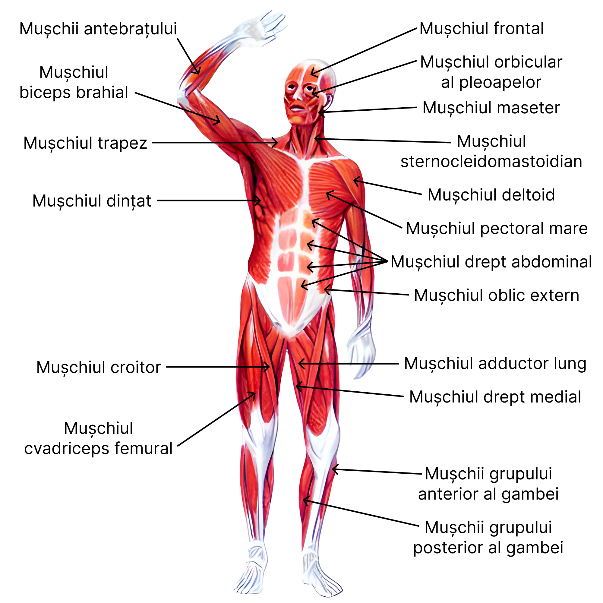

Mușchi striați (scheletici)
Caracteristici: Control voluntar, contractare rapidă, atașați de oase
Exemple: Biceps brahial, cvadriceps
Mușchii ne ajută să ne mișcăm, să stăm în picioare și să fim activi.
Sistemul muscular reprezintă totalitatea mușchilor corpului uman, organe contractile care, împreună cu oasele și articulațiile, formează aparatul locomotor. Este partea activă a acestuia, generând mișcările corpului prin contracții musculare controlate.
| Funcție | Descriere |
|---|---|
| Mișcare | Permite deplasarea corpului și a segmentelor acestuia prin contracții musculare. |
| Postură | Menține poziția corpului și echilibrul în ortostatism și mișcare. |
| Circulație | Mușchii inimii și cei ai pereților vaselor contribuie la circulația sângelui. |
| Respirație | Diafragma și mușchii intercostali permit ventilația pulmonară. |
| Termogeneză | Contracția mușchilor generează căldură, menținând temperatura corporală. |
| Protecție | Mușchii protejează organele interne prin peretele abdominal, toracic etc. |
| Digestie și excreție | Mușchii netezi din tubul digestiv, vezica urinară, uter etc. ajută la propulsia conținutului. |
Caracteristici: Control voluntar, contractare rapidă, atașați de oase
Exemple: Biceps brahial, cvadriceps
Caracteristici: Control involuntar, contracții lente, în organe interne
Exemple: Pereți intestinali, vase de sânge
Caracteristici: Striați, dar cu control involuntar, ritm automat
Exemple: Miocardul
| Tip morfologic | Caracteristici | Exemple |
|---|---|---|
| Fusiformi | Lungi, subțiri, cu burtă centrală | Biceps, triceps |
| Planoși | Lati, subțiri, acoperă suprafețe mari | Mușchii abdominali |
| Circulari (sfincteri) | În formă de inel, închid/deschid orificii | Orbicular al gurii, anal |
| Pene | Fibre dispuse ca penele | Deltoid, mușchii gambei |

Mușchii netezi se găsesc în pereții organelor interne (intestin, stomac, uter, vase de sânge).
Sunt dispuși în straturi (longitudinal și circular), fără tendoane sau inserții pe oase.
Nu formează mase musculare vizibile; au un aspect uniform, neted.
Celulă fusiformă, cu un singur nucleu central, mai mică decât cea striată.
Membrana celulei musculare netede.
Citoplasma conține puține miofibrile și mitocondrii.
Filamentele de actină și miozină nu sunt organizate în sarcomeri, aspectul e nestriat.
Este lentă, involuntară, controlată de sistemul nervos vegetativ (autonom).

Mușchiul cardiac formează pereții inimii și este striat, dar cu specificități funcționale adaptate contracției continue și ritmice.
Contracția este automată, ritmică și involuntară, controlată de sistemul nervos autonom și sistemul de conducere al inimii (nod sino-atrial, nod atrio-ventricular).
Plasează cursorul pe card pentru detalii
| Caracteristică | Mușchi Striat (Scheletic) | Mușchi Neted | Mușchi Cardiac |
|---|---|---|---|
| Control | Voluntar | Involuntar | Involuntar (automat) |
| Nucleu | Multinucleat | Mononucleat | 1–2 nuclei |
| Aspect microscopic | Striat | Nestriat | Striat |
| Sarcomeri | Da | Nu | Da |
| Viteză contracție | Rapidă | Lentă | Medie, ritmică |
| Oboseală | Se obosește repede | Nu se obosește ușor | Nu obosește |
| Localizare | Atașat de oase | Organe interne, vase | Inimă |
| Regiune | Mușchi principali | Funcție |
|---|---|---|
| Față | Orbicular al ochiului, orbicular al gurii, maseter | Expresii faciale, masticație |
| Gât | Sternocleidomastoidian, trapez | Rotația și flexia capului, susținerea umerilor |
| Regiunea submandibulară | Digastric, geniohioidian | Mișcări ale mandibulei, înghițire |
| Regiunea cervicală profundă | Scaleni, longus colli | Flexia și înclinarea laterală a gâtului |
Mușchi principali: Pectoral mare, intercostali, diafragm
Funcție: Respirație, mișcări ale brațului
Mușchi principali: Drept abdominal, oblici, transvers abdominal
Funcție: Flexie trunchi, protecție organe
Mușchi principali: Dorsal mare, romboizi, erectori spinali
Funcție: Extensia trunchiului, postură
| Segment | Mușchi principali | Funcție |
|---|---|---|
| Umăr | Deltoid, supraspinos | Ridicare braț, stabilitate |
| Braț | Biceps, triceps | Flexie/extensie antebraț |
| Antebraț | Flexori, extensori | Mișcări ale mâinii și degetelor |
| Mână | Tenar, hipotenar, lombricali | Prindere și mișcări fine |
| Segment | Mușchi principali | Funcție |
|---|---|---|
| Coapsă | Cvadriceps, biceps femural | Extensie/flexie genunchi |
| Gambă | Gastrocnemian, solear | Flexie picior, mers |
| Picior | Mușchii plantari | Susținere, echilibru |

Lungimea mușchiului se schimbă (mișcare vizibilă).
Exemplu: Ridicarea unui obiect, mersul pe jos.
Lungimea mușchiului nu se schimbă (forță fără mișcare).
Exemplu: Menținerea poziției plank, ținut greutăți nemișcate.
Viteză constantă a mișcării (aparat special).
Detalii: Folosită în kinetoterapie și antrenament de precizie.